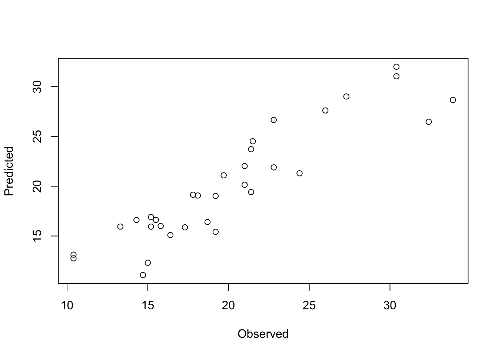

Exercise 2
Ex-1: The mtcars data from the datasets package
We will use an old data set from 1974 on gasoline consumption for various cars which is part of the datasets package in R. Load the mtcars.rdata file (first download from Fronter).
mpg cyl disp hp drat wt qsec vs am gear carb
Mazda RX4 21.0 6 160 110 3.90 2.620 16.46 0 1 4 4
Mazda RX4 Wag 21.0 6 160 110 3.90 2.875 17.02 0 1 4 4
Datsun 710 22.8 4 108 93 3.85 2.320 18.61 1 1 4 1
Hornet 4 Drive 21.4 6 258 110 3.08 3.215 19.44 1 0 3 1
Hornet Sportabout 18.7 8 360 175 3.15 3.440 17.02 0 0 3 2
Valiant 18.1 6 225 105 2.76 3.460 20.22 1 0 3 1As you can see there are multiple variables. If you have the datasets package you may look at the help file for the data by:
- Fit a multiple linear regression model with mpg (Miles/Gallon) as response variable and
wt(Weight) andcyl(Number of cylinders) as predictors. Call the model object “cars1”.
- Check the model assumptions by residual analysis.

- Give a summary of the results and compute the ANOVA-table.
Call:
lm(formula = mpg ~ cyl + wt, data = mtcars)
Residuals:
Min 1Q Median 3Q Max
-4.2893 -1.5512 -0.4684 1.5743 6.1004
Coefficients:
Estimate Std. Error t value Pr(>|t|)
(Intercept) 39.6863 1.7150 23.141 < 0.0000000000000002 ***
cyl -1.5078 0.4147 -3.636 0.001064 **
wt -3.1910 0.7569 -4.216 0.000222 ***
---
Signif. codes: 0 '***' 0.001 '**' 0.01 '*' 0.05 '.' 0.1 ' ' 1
s: 2.568 on 29 degrees of freedom
Multiple R-squared: 0.8302,
Adjusted R-squared: 0.8185
F-statistic: 70.91 on 2 and 29 DF, p-value: 0.000000000006809 Analysis of Variance Table
Response: mpg
Df Sum Sq Mean Sq F value Pr(>F)
cyl 1 817.71 817.71 124.044 0.000000000005424 ***
wt 1 117.16 117.16 17.773 0.000222 ***
Residuals 29 191.17 6.59
---
Signif. codes: 0 '***' 0.001 '**' 0.01 '*' 0.05 '.' 0.1 ' ' 1- Give a short report on the results.
Both cyl and wt appears to be highly significant predictors for mpg. The estimated effects are negative implying that the mileage decreases as both weight and cylinder numbers increase, which is a reasonable result. The \(R^2\) is 0.83, hence, about 83% of the variability in mileage is explained by the linear relationship with cyl and wt. The residual plot of fitted values versus residuals gives an indication of a non-linear relationship, which may be a result of non-linear dependencies or missing explanatory variable(s). The normal probability plot is more or less OK.
Ex-2: Indicator variable
- The
amvariable is an indicator variable for transmission system of the cars, 0=automatic, 1=manual. Run the following model in RStudio:
Write up the assumed model which has been run here. Also write up the estimated models for automatic and manual transmission, respectively.
The model is:
\[y = \beta_0 + \beta_1 x_1 + \beta_2 x_2 + \beta_3 x_3 + \beta_4 x_2\cdot x_3 + \epsilon\]
where \(y\)=mpg, \(x_1\)=cyl, \(x_2\)=wt, \(x_3\)=am and \(\epsilon \sim N(0, \sigma^2)\). The fitted model from RStudio is:
Call:
lm(formula = mpg ~ cyl + wt * am, data = mtcars)
Residuals:
Min 1Q Median 3Q Max
-3.4621 -1.4913 -0.7879 1.3959 5.3499
Coefficients:
Estimate Std. Error t value Pr(>|t|)
(Intercept) 34.2830 2.7965 12.259 0.00000000000152 ***
cyl -1.1814 0.3803 -3.106 0.00442 **
wt -2.3689 0.8244 -2.874 0.00782 **
am 11.9385 3.8453 3.105 0.00444 **
wt:am -4.1974 1.3115 -3.200 0.00350 **
---
Signif. codes: 0 '***' 0.001 '**' 0.01 '*' 0.05 '.' 0.1 ' ' 1
s: 2.265 on 27 degrees of freedom
Multiple R-squared: 0.877,
Adjusted R-squared: 0.8588
F-statistic: 48.13 on 4 and 27 DF, p-value: 0.000000000006643 For automatic transmission (am=\(x_3\)=0) we have the estimated model:
\[\hat{y} = 34.28 - 1.18x_1 - 2.37x_2\]
For manual transmission (am=\(x_3\)=1) we have \[\hat{y} = 34.28 - 1.18x_1 - 2.37x_2 + 11.94\cdot 1 - 4.20x_2\cdot 1\] \[= 46.22 - 1.18x_1 - 6.57x_2\]
We observe that the negative effect of weight on mileage is larger for manual transmission than for automatic.
Ex-3: Comparing models - Partial F-test
- From the p-values we observe that transmission gives a significant addition to the intercept and to the effect of weight, respectively. These p-values correspond to testing each effect GIVEN that all other variables are included in the model. Sometimes we would rather like to test several effects jointly. For instance, should we add both transmission (
am) AND the interaction betwen transmission and weight (wt:am) to the model? This is a joint test of the significance of transmission in the model. To accomplish this we may compare the fits ofcars2(a full model) withcars1(a reduced model) since the difference between these models are exactly the transmission effects. This is called a partial F-test (Fisher test) were we test whether the SSE has decreased significantly as we go from the reduced model to the full model. The partial F-test may be run in RStudio by:
Analysis of Variance Table
Model 1: mpg ~ cyl + wt
Model 2: mpg ~ cyl + wt * am
Res.Df RSS Df Sum of Sq F Pr(>F)
1 29 191.17
2 27 138.51 2 52.666 5.1333 0.0129 *
---
Signif. codes: 0 '***' 0.001 '**' 0.01 '*' 0.05 '.' 0.1 ' ' 1From the output we see that the test statistic is an F-statistic. Is there a significant effect of transmission do you think?
A lengthy answer: We are here really testing the hypotheses:
\[H_0: \beta_3 = \beta_4 = 0\] versus the alternative that at least one of them is different from zero.
We reject the null-hypothesis at test-level \(\alpha\) if
\[F = \frac{(SSE_\text{red.mod}-SSE_\text{full.mod})/r}{MSE_\text{full.mod}}\] is larger than \(F_{\alpha, r, n-p}\), where \(r\) is the difference in the degrees of freedom for SSE for the two models (here \(r=2\)), and \(n-p\) are the degrees of freedom for SSE of the full model (here \(n-p=27\)).
From the output we have (note RSS = SSE): \[F = \frac{(191.17 - 138.51)/2}{138.51/27} = 5.13\]
We reject at level \(\alpha=0.05\) if this observed F is larger than \(F_{0.05, 2, 27}\). At this point we could look this up in a Fisher-table, or alternatively compute this quantile of the Fisher distribution by:
[1] 3.354131See ?FDist for help-file for the Fisher distribution.
We reject the null-hypothesis.
Alternatively we reject since the p-value from the output is smaller than 0.05.
- Perform a residual analysis of the
cars2model.

The linearity has improved, but maybe there is an increasing variance with increasing fitted value (estimated mileage). The normality looks good.
Ex-4: Influential measurements
- Use the
influence.measures()function to compute the Cook’s distances and the leverage (hat) values for all observations accoring to thecars2model. Are there any influential observations according to these measures?
Potentially influential observations of
lm(formula = mpg ~ cyl + wt * am, data = mtcars) :
dfb.1_ dfb.cyl dfb.wt dfb.am dfb.wt:m dffit cov.r
Lincoln Continental 0.38 0.16 -0.52 -0.28 0.23 -0.59 1.57_*
Fiat 128 0.10 -0.31 0.17 0.25 -0.15 0.91 0.36_*
Ford Pantera L 0.01 -0.02 0.01 0.01 -0.02 -0.04 1.61_*
Maserati Bora -0.03 0.09 -0.05 -0.35 0.49 0.73 1.64_*
cook.d hat
Lincoln Continental 0.07 0.33
Fiat 128 0.13 0.10
Ford Pantera L 0.00 0.25
Maserati Bora 0.11 0.38Four observations are flagged by R, but none according to Cook’s distance or leverage (hat).
Ex-5: Model selection
- Fit a third multiple linear regression model with mpg (Miles/Gallon) as response variable and
cyl,disp,hp,drat,wtandqsecas predictor variables. Call the model object “cars3”. Report a summary of the analysis.
Call:
lm(formula = mpg ~ cyl + disp + hp + drat + wt + qsec, data = mtcars)
Residuals:
Min 1Q Median 3Q Max
-3.9682 -1.5795 -0.4353 1.1662 5.5272
Coefficients:
Estimate Std. Error t value Pr(>|t|)
(Intercept) 26.30736 14.62994 1.798 0.08424 .
cyl -0.81856 0.81156 -1.009 0.32282
disp 0.01320 0.01204 1.097 0.28307
hp -0.01793 0.01551 -1.156 0.25846
drat 1.32041 1.47948 0.892 0.38065
wt -4.19083 1.25791 -3.332 0.00269 **
qsec 0.40146 0.51658 0.777 0.44436
---
Signif. codes: 0 '***' 0.001 '**' 0.01 '*' 0.05 '.' 0.1 ' ' 1
s: 2.557 on 25 degrees of freedom
Multiple R-squared: 0.8548,
Adjusted R-squared: 0.82
F-statistic: 24.53 on 6 and 25 DF, p-value: 0.00000000245 Apparently only wt is significant, but having many variables in a model may lead to inflated Std. Errors of the estimates due to correlation between predictors, and problems finding truly significant variables.
- We would like to check various sub-models of this model by combining different variables. Install and load the ‘
mixlm’ package. The package contains a function calledbest.subsets()which can help us find a good model.
Run
cyl disp hp drat wt qsec RSS R2 R2adj Cp
1 ( 1 ) * 278.3219 0.7528328 0.7445939 14.562907
1 ( 2 ) * 308.3342 0.7261800 0.7170527 19.152594
1 ( 3 ) * 317.1587 0.7183433 0.7089548 20.502090
1 ( 4 ) * 447.6743 0.6024373 0.5891853 40.461438
1 ( 5 ) * 603.5667 0.4639952 0.4461283 64.301580
2 ( 1 ) * * 191.1720 0.8302274 0.8185189 3.235333
2 ( 2 ) * * 195.0478 0.8267855 0.8148396 3.828045
2 ( 3 ) * * 195.4636 0.8264161 0.8144448 3.891644
2 ( 4 ) * * 246.6825 0.7809306 0.7658223 11.724387
2 ( 5 ) * * 269.2413 0.7608970 0.7444071 15.174232
3 ( 1 ) * * * 176.6205 0.8431500 0.8263446 3.010026
3 ( 2 ) * * * 180.6046 0.8396119 0.8224275 3.619295
3 ( 3 ) * * * 183.5216 0.8370214 0.8195594 4.065383
3 ( 4 ) * * * 183.6819 0.8368791 0.8194018 4.089899
3 ( 5 ) * * * 186.0593 0.8347678 0.8170643 4.453469
4 ( 1 ) * * * * 170.4444 0.8486348 0.8262103 4.065526
4 ( 2 ) * * * * 174.1035 0.8453853 0.8224794 4.625103
4 ( 3 ) * * * * 174.3752 0.8451439 0.8222023 4.666661
4 ( 4 ) * * * * 175.2195 0.8443942 0.8213415 4.795768
4 ( 5 ) * * * * 175.6684 0.8439955 0.8208838 4.864420
5 ( 1 ) * * * * * 167.4261 0.8513152 0.8227219 5.603955
5 ( 2 ) * * * * * 168.6853 0.8501969 0.8213886 5.796524
5 ( 3 ) * * * * * 170.1291 0.8489147 0.8198599 6.017318
5 ( 4 ) * * * * * 171.3467 0.8478334 0.8185706 6.203520
5 ( 5 ) * * * * * 172.2208 0.8470572 0.8176451 6.337198
6 ( 1 ) * * * * * * 163.4768 0.8548224 0.8199798 7.000000The function reports by default the 5 best models for each model size (number of predictors). The model size is given in the first column. Column two is the rank within model size, then comes a column for each variable with a star indicating that a given variable is part of the model. Finally comes the residual sum of squares (RSS or SSE), \(R^2\), \(R^2\)-adjusted and finally a diagnostic called Mallow’s Cp. Which sub-model would you say is the best fitting model according to the \(R^2\)-adjusted?
A couple of models are quite similar, but the largest \(R^2\)-adjusted is obtained with a model with predictors cyl, hp and wt. This is also a quite simple model with few predictors. We should always strive for simple models and choose the simpler model in cases where the fit appears to be more or less equal for several models.
Ex-6: Model validation
On Fronter you find a file called “CV.R” containing two functions CV() and Kfold(). Download this file and open it in RStudio and press the “source” button up to the right in the script window. This will run the file and create these functions.
A fitted model should ideally be validated on a test set of new and un-touched data. We could predict the new samples using our best choice model and evaluate the prediction performance. If the model predicts well, we probably have a good model!
If we don’t have a test set, we may perform Cross-validation. The most common version is the Leave-One-Out Cross-validation where we successively remove one observation from the data and fit the model to the remaining observations. The fitted model is used to predict the left out observation. After fitting a model, the left out observation is put back, and another is left out. In ttoal we then fit \(n\) models, and perform \(n\) predictions.
- Use the
CV()function to perform a Leave-One-Out CV using thecars2model fit by:
$pred
[1] 22.02465 20.14940 26.64983 19.41364 16.40368 19.06674 16.61396
[8] 21.29786 21.89094 19.03386 19.14117 15.09325 15.87195 15.93892
[15] 13.12962 12.75906 11.08191 26.47037 31.03522 28.65971 24.50916
[22] 16.61597 16.90330 15.94565 15.42444 29.00620 27.60453 31.99763
[29] 16.00725 21.09180 12.31828 23.71533
$msep
[1] 6.088405
$r.squared.pred
[1] 0.8282658The CV() returns a list with three elements, the predictions, the Mean Square Error of Prediction and and \(R^2\)-predicted.
*Make a plot of the observed mpg versus the cross-validation predictions.

- Is the best model from the previous exercise, identified by the
best.subsets(), a better model in terms of prediction error (MSEP)? The MSEP is defined by:
\[\text{MSEP} = \frac{1}{n}\sum_{i=1}^{n}\left(y_i - \hat{y}_{(i)}\right)^2\]
where \(\hat{y}_{(i)}\) is the prediction of \(y_i\) using a model where observation \(i\) was left out from the model estimation. A small value implies better prediction.
$pred
[1] 22.96794 22.07539 26.25638 20.90993 16.97878 20.41187 15.65251
[8] 23.64555 23.38461 20.02785 20.09677 14.96997 16.05497 16.07208
[15] 11.01924 10.08662 8.73892 26.32479 28.71190 27.34888 25.82503
[22] 17.69247 18.08644 14.79267 15.57424 27.70402 26.61982 27.72238
[29] 16.57704 21.28440 12.89349 24.61230
$msep
[1] 7.189898
$r.squared.pred
[1] 0.7972019No, this model does not predict better than cars2.
- Leave-One-out CV is known to have large uncertainty, and using a K-fold CV is an alternative. Then the data are divided into K subsets (folds) of approximately equal sizes, and a leave-one-fold-out CV is performed instead. A K=10 is often recommended. Here, since n=32 a K=8 is better, since this gives subsets of equal sizes. Create K=8 random folds by
[[1]]
[1] 11 22 14 10
[[2]]
[1] 8 6 4 21
[[3]]
[1] 17 25 9 16
[[4]]
[1] 29 26 5 3
[[5]]
[1] 1 24 19 30
[[6]]
[1] 32 15 28 31
[[7]]
[1] 2 27 20 23
[[8]]
[1] 13 18 7 12Since the folds are sampled randomly, we get r different folds each time we run Kfold().
As you see, myfolds is a list of 8 random subsets of observation numbers.
Re-run the validation of cars2 by
$pred
[1] 22.27053 20.08943 26.96290 19.46344 16.23783 18.84980 16.55208
[8] 21.69562 21.88502 19.23336 19.23336 15.25603 16.13734 16.12464
[15] 13.21458 10.77692 11.00258 26.45393 31.20857 28.76698 23.51149
[22] 16.77591 16.84913 15.98576 15.28733 29.43170 26.89460 32.35720
[29] 15.98236 21.25588 12.27157 23.24905
$msep
[1] 5.826322
$r.squared.pred
[1] 0.8368866Note that the result now will vary if you repeat the creation of random K-folds for the cross-validation. Try to make a new myfolds and run the CV again.